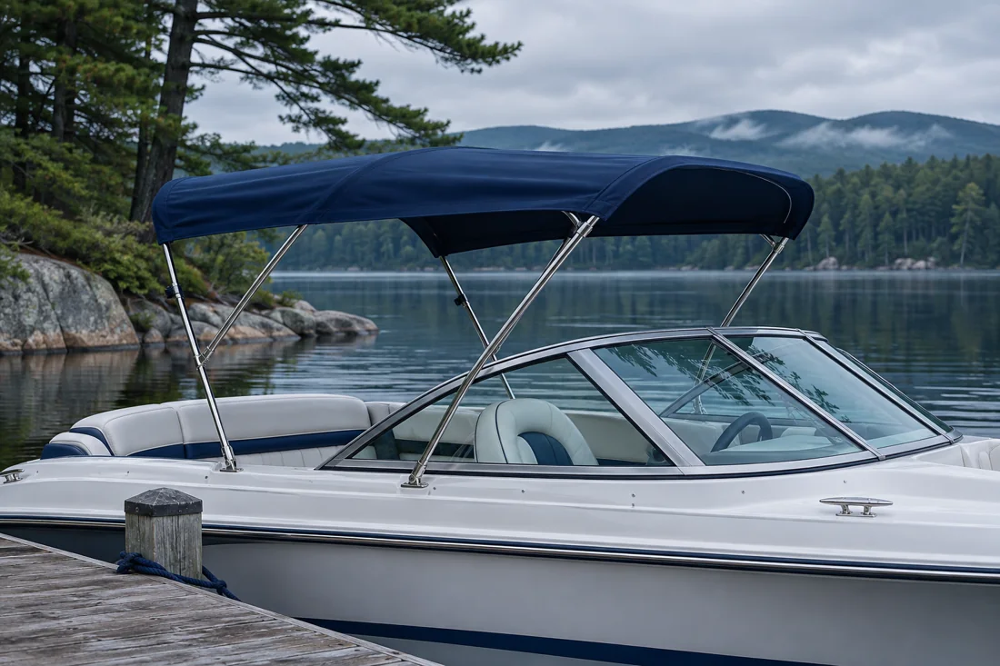

Illustrative imageWATERLINE & CANVAS
Boat covers
Boat covers, canvas tops and enclosures for the way your boat is kept and used.
THE WORK GALLERY
A photographic study of the kinds of projects this shop handles. These examples illustrate the work; they aren’t verified customer projects.

Illustrative imageWATERLINE & CANVAS
Boat covers, canvas tops and enclosures for the way your boat is kept and used.
 Illustrative image
Illustrative imageFINISH & STITCHING
Upholstery for boat seats and cushions, from worn seams to a refreshed arrangement.
 Illustrative image
Illustrative imagePROFILE & TEXTURE
Motorcycle seats, vehicle upholstery and convertible tops.
 Illustrative image
Illustrative imageSHADE & SILHOUETTE
Fabric awnings for storefronts and outdoor spaces, shaped around the opening and its use.